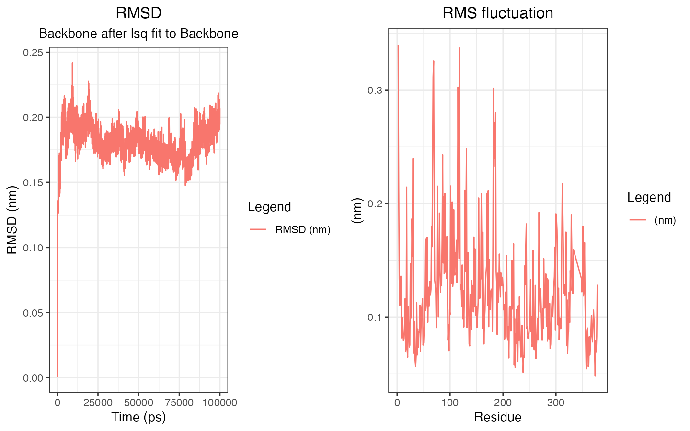

This document demonstrates how to use the xvm package and its functions with sample datasets and plots. It also shows how to read multiple xvg files and arrange their plots using ggpubr.
Note: Ensure dependency packages are installed:
install.packages(c("ggplot2", "stringr", "ggpubr"))Load the xvm package and dependency packages
Load the xvm package:
# Load the xvm package
library(xvm)
#> Error in get(paste0(generic, ".", class), envir = get_method_env()) :
#> object 'type_sum.accel' not foundLoad other dependency packages:
Read a single xvg file and plot it.
Get Example File Path
Retrieve the path to the example file included in the package:
# This example file is an xvg file containing RMSD data generated by GROMACS
rmsd_file_path <- system.file("extdata/rmsd.xvg", package = "xvm")Read the xvg file
# Read the xvg file using read_xvg() function
rmsd_data <- read_xvg(rmsd_file_path)
# The imported xvg file is stored as a list, with the list name corresponding to the file name.
names(rmsd_data)
#> [1] "rmsd.xvg"The imported xvg file is stored as a list, so you can simply display
the data using the str() function.
str(rmsd_data[[1]])
#> List of 2
#> $ data :'data.frame': 3334 obs. of 2 variables:
#> ..$ Time (ps): num [1:3334] 0 30 60 90 120 150 180 210 240 270 ...
#> ..$ RMSD (nm): num [1:3334] 0.000499 0.115534 0.127646 0.125452 0.123716 ...
#> $ metadata:List of 9
#> ..$ title : chr "RMSD"
#> ..$ subtitle : chr "Backbone after lsq fit to Backbone"
#> ..$ xaxis : chr "Time (ps)"
#> ..$ yaxis : chr "RMSD (nm)"
#> ..$ xaxis_formatted : chr "Time (ps)"
#> ..$ yaxis_formatted : chr "RMSD (nm)"
#> ..$ legends : chr(0)
#> ..$ legends_formatted: Named list()
#> ..$ file_path : chr "/private/var/folders/_b/gx4lc14d5ssf7pl9qlkl32r80000gn/T/Rtmps3eoY2/temp_libpath769856a9f65a/xvm/extdata/rmsd.xvg"
#> - attr(*, "class")= chr "xvg_data"The list contains two elements, each storing different pieces of information:
$data: a data frame containing the xvg data.
$metadata: other detailed information about the xvg
file, including:
- title: the main title.
- subtitle: the subtitle.
- xaxis: the label for the x-axis.
- yaxis: the label for the y-axis.
- xaxis_formatted: the x-axis label formatted to support subscripts and superscripts.
- yaxis_formatted: the y-axis label formatted to support subscripts and superscripts.
- legends: the legend labels.
- legends_formatted: the formatted legend labels.
- file_path: the path where the file is located.
Read multiple xvg Files
The read_xvg() function can accept multiple xvg file
paths as a character vector.
# Similarly, you can also read multiple types of xvg files.
multi_file_path <- dir(system.file("extdata", package = "xvm"))
# Filter out xvg files using stringr package
library(stringr)
multi_file_path <- multi_file_path[str_detect(multi_file_path, ".xvg")]
print(multi_file_path)
#> [1] "rmsd.xvg" "rmsf.xvg"
# Set the full xvg file paths
multi_file_path <- file.path(system.file("extdata", package = "xvm"),
multi_file_path
)Inspect a single xvg file
You can view the information of a single xvg file by indexing the list:
# Check the first xvg file info via indexing
str(multi_data[[1]])
#> List of 2
#> $ data :'data.frame': 3334 obs. of 2 variables:
#> ..$ Time (ps): num [1:3334] 0 30 60 90 120 150 180 210 240 270 ...
#> ..$ RMSD (nm): num [1:3334] 0.000499 0.115534 0.127646 0.125452 0.123716 ...
#> $ metadata:List of 9
#> ..$ title : chr "RMSD"
#> ..$ subtitle : chr "Backbone after lsq fit to Backbone"
#> ..$ xaxis : chr "Time (ps)"
#> ..$ yaxis : chr "RMSD (nm)"
#> ..$ xaxis_formatted : chr "Time (ps)"
#> ..$ yaxis_formatted : chr "RMSD (nm)"
#> ..$ legends : chr(0)
#> ..$ legends_formatted: Named list()
#> ..$ file_path : chr "/private/var/folders/_b/gx4lc14d5ssf7pl9qlkl32r80000gn/T/Rtmps3eoY2/temp_libpath769856a9f65a/xvm/extdata/rmsd.xvg"
#> - attr(*, "class")= chr "xvg_data"Plot a single xvg file
# Plot one of the xvg files using the plot_xvg() function:
plot_xvg(multi_data[[1]])Plot multiple xvg files
Alternatively, use lapply() to generate plots for each
xvg file:
# Use lapply() to plot all the xvg files in batch
mutli_xvg_plots <- lapply(multi_data, plot_xvg)Arrange plots using ggpubr
Finally, arrange all plots into a single layout using the
ggarrange() function from the ggpubr package:
